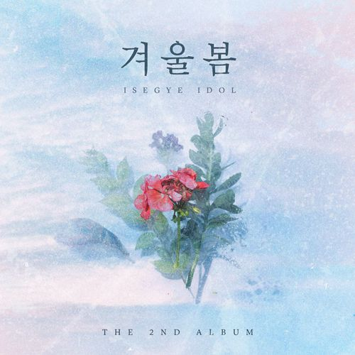

이세계 아이돌 디지털 싱글 2집 "겨울봄" 발매
이세계 아이돌 2집 "겨울봄"이 22년 3월 11일 오후 6시에 정식 발매된다.

완전한 겨울 분위기의 곡이라고 하여 조금 더 일찍 나올 것이라 기대했지만, 봄이 다 되어서야 나온다는 건 조금 아쉽다. 하지만 출시 전부터 멤버 개인 커버곡, 고정멤버들과의 합동 커버 등 여러 고퀄리티의 컨텐츠들이 밀려오고 있었던 것을 감안하면, 우왁굳이 그에 뒤지지 않게끔 굉장히 준비를 많이 했을 것이라 생각된다.

멤버들 또한 굉장히 심혈을 기울여 준비한 것으로 보이는 만큼, 빠른 시일 내에 음원이 공개되길 기원할 뿐이다. 1집에서 팬미팅을 동반하였던 것처럼, 2집은 공개 당일 실제 기자들을 초청하여 기자 간담회를 진행할 것으로 보이며, 현재 우왁굳의 네이버 팬카페인 "왁물원"에서 기자 참가 신청을 받고 있다.
3월 11일 오후 6시, 드디어 이세계아이돌의 싱글 2집 "겨울봄"이 공개되었다. 겨울봄은 공개 이후 멜론 Top 100 차트 36위, 벅스 차트 2위, 가온 다운로드 차트 1위를 기록하는 등, 1집 "RE:WIND"보다 더 놀라운 기록들을 세워나가고 있으며, 각종 매체에서도 메타버스형 아이돌의 성공사례로 반복 소개되고 있다.